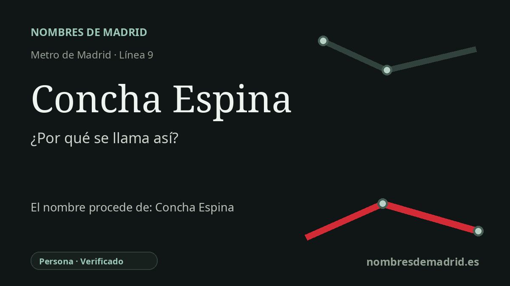

Publicado el · Investigación de Nombres de Madrid · Cómo verificamos cada origen · 8 fuentes consultadas
Respuesta rápida
La estación de Concha Espina toma su nombre de la cercana avenida de Concha Espina, que homenajea a la novelista santanderina Concha Espina. Fue una de las escritoras españolas más reconocidas de comienzos del siglo XX y recibió 25 nominaciones al Premio Nobel de Literatura.
La historia del nombre
El nombre de la estación de Concha Espina se entiende mejor desde la geografía urbana de Madrid. La estación presta servicio a la línea 9 en Chamartín, con accesos en la calle del Príncipe de Vergara junto a la plaza de Cataluña, y queda vinculada al eje urbano de la avenida de Concha Espina. El callejero oficial del Ayuntamiento de Madrid recoge esa avenida en Chamartín, desde el paseo de la Castellana hasta la calle del Príncipe de Vergara.
La persona recordada por la avenida fue Concha Espina, nombre literario de Concepción Espina y Tagle. La Real Academia de la Historia la identifica como escritora nacida en Santander el 15 de abril de 1869 y fallecida en Madrid el 19 de mayo de 1955. Su trayectoria pasó por la poesía, el periodismo, la narrativa y la vida literaria pública, aunque su fama se asentó sobre todo en la prosa de ficción.
Su biografía temprana ayuda a explicar por qué su nombre viajó más allá de Madrid. Tras las dificultades económicas familiares, su etapa en Mazcuerras y un periodo en Chile, Espina construyó una carrera profesional como escritora en España y en la prensa del mundo hispánico. La Biblioteca Nacional de España destaca La niña de Luzmela y La esfinge maragata entre las obras que la consolidaron, y señala que La esfinge maragata la convirtió en la primera mujer ganadora del Premio Fastenrath de la Real Academia Española.
Un detalle cultural llamativo es que su ficción llegó a marcar un paisaje. Mazcuerras, localidad en la que vivió, también es conocida como Luzmela por La niña de Luzmela, y el ayuntamiento mantiene la casa de Concha Espina y esa asociación literaria dentro de su patrimonio municipal. En Madrid, su nombre quedó unido a una gran avenida próxima al entorno del Santiago Bernabéu y, a través de esa avenida, a la estación de Metro.
Por tanto, el nombre de la estación está bien sustentado como conmemoración personal, aunque probablemente llegó a la estación de forma indirecta, por la avenida, y no por un acto biográfico independiente de denominación. La estación abrió el 30 de diciembre de 1983, cuando entró en servicio el tramo Plaza de Castilla-Avenida de América. Las afirmaciones sobre el Nobel deben formularse con precisión: el archivo oficial del Nobel registra 25 nominaciones de Literatura, concentradas entre 1926 y 1932 y retomadas en 1952 y 1954, pero nunca obtuvo el premio.